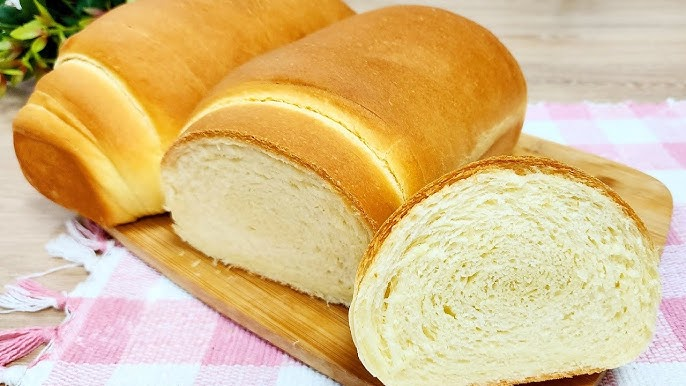

A panqueca americana é provavelmente o café da manhã mais famoso dos Estados Unidos. Por ser uma receita de preparo simples e não envolver corte de ingredientes, a massa de panqueca é excelente para fazer junto com as crianças.
Ingredientes
1 e 1/4 xícara (chá) de farinha de trigo
3 colheres (chá) de fermento em pó
1 xícara (chá) de leite
1 pitada de sal
1 colher (sopa) de açúcar
2 ovos levemente batidos
2 colheres (sopa) de manteiga derretida
óleo
Modo de preparo
Misture em um recipiente: a farinha, o açúcar, o fermento e o sal.
Em outro recipiente, misture os ovos, o leite e a manteiga.
Acrescente os líquidos aos secos, sem misturar em excesso.
O ponto da massa não deve ser muito líquido, deve escorrer lentamente.
Aqueça e unte a frigideira com óleo, coloque a massa no centro, cerca de 1/4 xícara por panqueca.
Vire a massa para assar do outro lado e está pronto!
Pão Caseiro

Ingredientes
1 kg de farinha de trigo sem fermento (reserve 1 xícara ou 120 g, só use-a se for necessário)
2 ovos (remova a película ou pele da gema)
100 ml de óleo
1/2 colher (sopa) de sal
400 ml de leite morno
45 g de fermento biológico fresco
1 xícara de açúcar (200 g)
Modo de preparo
Em um liquidificador, coloque todos os ingredientes, menos o sal e a farinha (o sal mata o fermento).
Bata até obter uma consistência líquida, cremosa e espumosa (cuidado com a temperatura do leite, pois ele deve estar morno e não quente; se estiver quente, ele matará o seu fermento).
Despeje esse líquido em uma bacia e adicione metade da farinha e misture com uma colher de pau.
A massa ficará mole e grudenta.
Reserve 1 xícara de farinha e adicione o resto dela à massa junto com o sal.
A massa ficará macia e um pouco pegajosa.
Nesse momento, ligue seu forno em fogo baixo por 5 minutos e desligue-o.
Os pães serão colocados nele para que o calor os faça crescer, enquanto descansam.
Enfarinhe uma superfície e sove a massa com carinho até que ela desgrude das mãos.
Só em último caso, adicione o restante da farinha: isso deixará o pão mais leve e fofo.
Experimente e corrija o sabor da massa conforme seu paladar.
Divida a massa em duas partes iguais e abra cada uma com um rolo, enfarinhando a superfície novamente: neste momento a massa ficará macia e lisa.
Unte com um pouquinho de óleo ou margarina a uma forma de bolo média de 30 x 24 ou duas formas próprias para pão de 27 x 11 (prefiro forma para pães, pois o pão cresce bonito e para para cima)
Enrole os pães no tamanho da forma escolhida e faça pequenos cortes em “X” em cima da massa para decorar.
Leve os pães ao forno que você aqueceu por 5 minutos e desligou.
Deixe-os descansar, para que cresçam, estimulados pelo calor morno.
Cuidado: se o forno estiver muito quente, seus pães vão assar antes de crescer e a massa ficará embatumada.
Aguarde uns 20 a 30 minutos e, se tudo correr bem, ela crescerá lisa e arredondada, podendo até ultrapassar as bordas da forma.
Se ela não crescer, não se preocupe.
Mesmo que a massa não tenha crescido após esse tempo, ligue o forno em temperatura média (180º C) e deixe ela assar por uns 30, 40 ou 45 minutos (depende do seu forno).
O fermento "preguiçoso" poderá "despertar" à força nesse momento.
Quando sentir o cheirinho de pão assado, aumente um pouco chama do fogo para que a casca escureça.
Se deixar por muito tempo, ela ficará amarga.
Deixe esfriar dentro ou fora do forno.
O pão deverá estar leve, fofo, cheio de furinhos (aerado), delicado, cheiroso e quase desmanchando quando cortado.
Bolo de Cenoura
O bolo de cenoura é um doce muito popular em nosso país, especialmente no café da manhã e no lanche da tarde. Com sua cobertura de chocolate irresistível e seu interior macio e úmido, ela é uma receita que conquista o coração de todos!
Ingredientes
Massa
1/2 xícara (chá) de óleo
4 ovos
2 e 1/2 xícaras (chá) de farinha de trigo
3 cenouras médias raladas
2 xícaras (chá) de açúcar
1 colher (sopa) de fermento em pó
Cobertura
1 colher (sopa) de manteiga
1 xícara (chá) de açúcar
3 colheres (sopa) de chocolate em pó
1 xícara (chá) de leite
Modo de preparo
Massa
Em um liquidificador, adicione a cenoura, os ovos e o óleo, depois misture.
Acrescente o açúcar e bata novamente por 5 minutos.
Em uma tigela ou na batedeira, adicione a farinha de trigo e depois misture novamente.
Acrescente o fermento e misture lentamente com uma colher.
Asse em um forno preaquecido a 180° C por aproximadamente 40 minutos.
Cobertura
Despeje em uma tigela a manteiga, o chocolate em pó, o açúcar e o leite, depois misture.
Leve a mistura ao fogo e continue misturando até obter uma consistência cremosa, depois despeje a calda por cima do bolo.